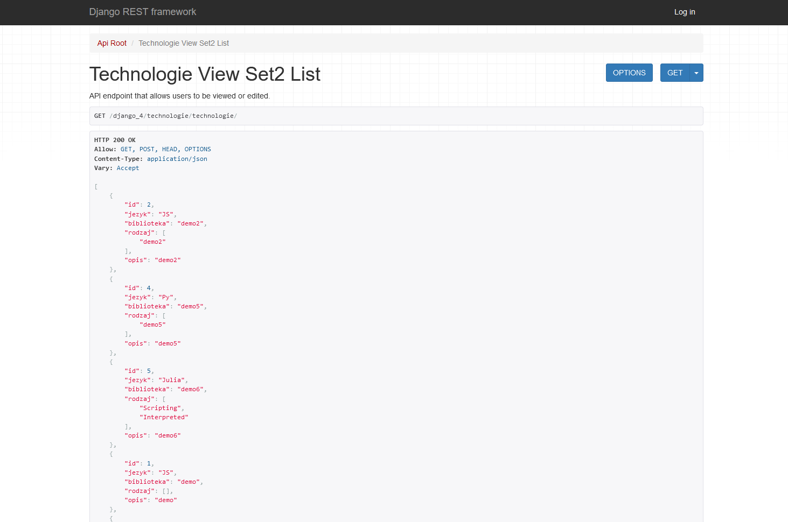

Main page
I mainly create code in core Python, while working with Web aplications in my work i found out it more intresting, so from this time this became my main programming route.
I have been working with: tkinter, psycopg, selenium, Django, GeoDjango.
In JavaScript,CSS,HTML i created this webpage, and some things in GeoDjango too,
Currently i have few opened projects within this technology i am gonna add the results here soon !
Technologies included to project down below: Python-GeoDjango, Postgres, Java Script, HTML5, CSS
Small testing project using Python
Flask framework it is simple create read application served on heroku server. No fronted framewok used here just HTML, CSS.
https://flaskbitcoinia.herokuapp.com/1
Testing project using Python and Django  framework Bootstrap as a frontend and Postgres database
It is also include simple REST requests
framework Bootstrap as a frontend and Postgres database
It is also include simple REST requests
framework Bootstrap as a frontend and Postgres database
It is also include simple REST requests

Small testing project using Python and Django framework Bootstrap as a frontend and Postgres database it also has delete option on evry object in database
framework Bootstrap as a frontend and Postgres database it also has delete option on evry object in database